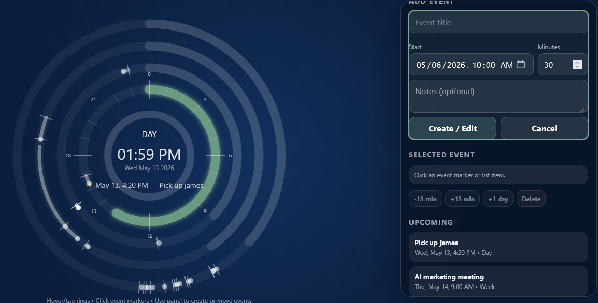

TimeBurner
A visual layer on Google Calendar that shows your year as concentric time rings—so you see what matters coming, not buried in lists and search results.

Capabilities
- Full-year visual context — Scan months of commitments on one canvas instead of paging week by week.
- Time-until clarity — See how many hours, days, and months stand between now and each event.
- Create and edit in place — Add new items or adjust existing ones while staying in the ring view.
- Google Calendar underneath — Your source of truth stays where it already lives; this tool is how you see it.
Benefits
- Less cognitive load — Spatial layout maps time to shape and position, which many brains parse faster than text-heavy grids.
- Fewer dead-end searches — Important dates surface by proximity on the rings instead of requiring queries and filters.
- Big-picture planning — Spot clusters, gaps, and collisions across the whole year before they become problems.
- A calmer relationship with the calendar — One coherent picture replaces hunting through panels and menus.
Who it is for
- Visual processing people (VPP) — Anyone who thinks in diagrams, maps, and spatial relationships rather than scrolling lists.
- Professionals and creatives — Consultants, founders, designers, and operators who juggle long horizons and need clients or collaborators to grasp their availability at a glance.
- Anyone allergic to “search the calendar” — If finding a date feels like friction, this interface is built for you.
The future is visual.